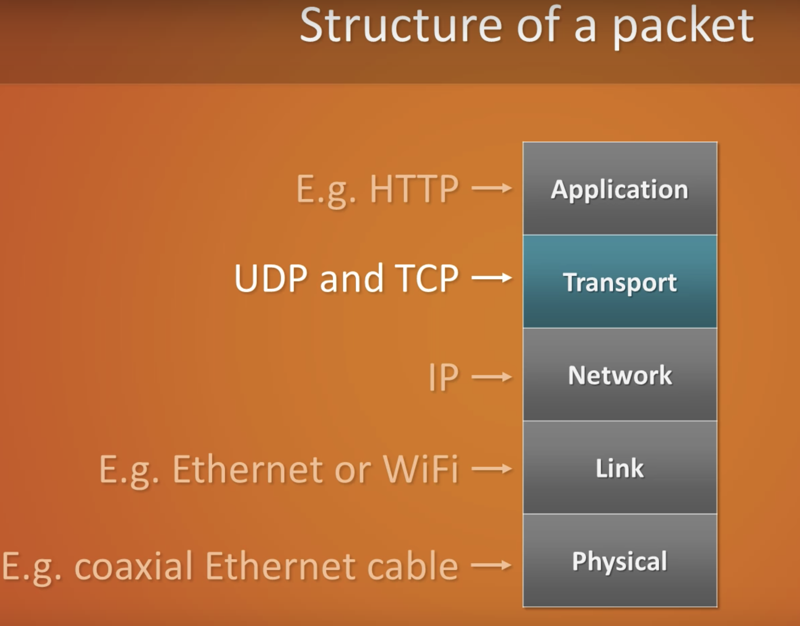

Data moves around the Internet so quickly. How can data be sent in seconds so reliably? To start, packets have many routes and the most direct route is not always the best. Networks are fault tolerant and can keep sending packets even if there is a failure along the way, ensuring reliability. Packets of information travel across the internet based on how much traffic there is and take the shortest route to their destination. Along the way, packets are directed by routers to ensure they reach their destination. Packets have limitations, large images can be broken down into multiple packets and they can reach their destination at different times and in any order.
It may raise concerns that your packets can arrive out of order, however the Transmission Control Protocol controls the sending and receiving of packets as a guaranteed mailing service. TCP does inventory of all the packets to ensure they are in order and all there. If any are missing, it will request the missing packet be resent. Once all the packets are present and in order, TCP signs off on it and confirms that it was received. TCP and router systems are scalable and redundant, meaning that as more routers are added to networks, they become more and more reliable.
